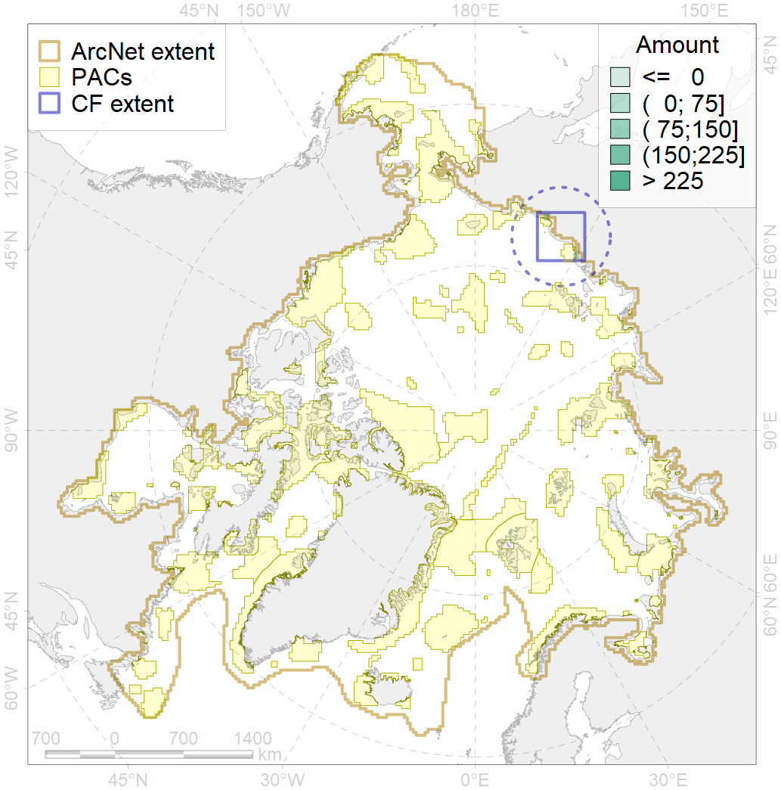

8019

| CF ID | 8019 |
| CF Name | East Siberian sea estuaries |
| Time Period | 1900s - 1990s |
| Source(s) | http://data.unep-wcmc.org/datasets/26 |
| Seasonality | January - December |
| Depth Horizon | 0-30 |
| Methodology | published maps, field surveyes |
| Author Name | B. Solovyev |
| Notes | estuaries with discharge 1001-2000 |
| Conservation Target Set in the Scenario | 0.5 |
| Conservation Target Achieved in the Scenario | 0.630 (Scenario: 125.9%) |
| PAC ID | Proportion in the PAC | Contribution to ArcNet Target Achievement | PAC’s Contribution to the Achieved Target |
|---|---|---|---|
| 9 | 48.1% | 90.9% | 72.2% |
| 10 | 13.5% | 26.1% | 20.7% |
| inner | 61.6% | 117.1% | 92.9% |
| outer | 38.4% | 8.9% | 7.1% |